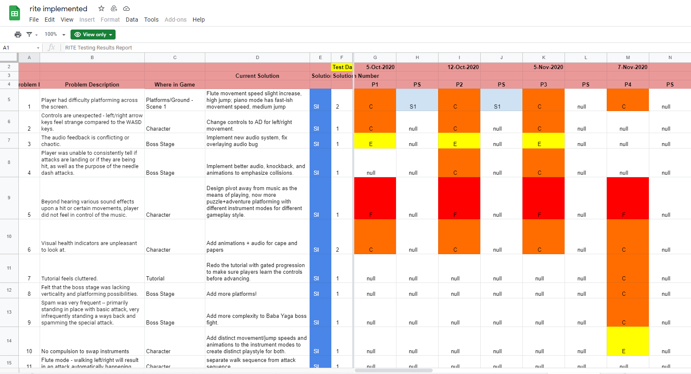

Project Description
This was a year-long capstone group project that was presented for the 2021 USC Games Expo.
I worked as the usability lead, recruiting playtesters and collecting feedback for each iterative build. After each session, I then organized the raw data into weekly reports directing the team on what the game was lacking in and where future efforts should be focused. Additional duties included periodic program-wide presentations on the state of the game and plans up until official release.
A Closer Look
You can download the game here.
Tools Used
Google Sheets
I used Google Sheets to organize all collected data into a single spreadsheet that could be accessed and easily read by the team. I followed the guidelines of RITE testing, which meant the rapid testing of successive builds against fresh testers, documenting problems encountered in each session, and classifying them by their degree of severity (failure, error, miss, complaint).
Additionally, documenting the source and situation of an issue was done in order to provide context for the design team and expedite their process of finding a solution. Over time, the trend of problems ideally declined in both number of problems identified as well as the degree of severity.
 A section of the sheet used for RITE testing.Zoom
Zoom was used for its convenience of setting up playtest sessions and recording functionality. A standard testing session included a brief introduction and briefing of expectations, any necessary pre-playtest troubleshooting, a blind playthrough of the build provided, and then debriefing followed by an interview and questionnaire.
Google Forms
Following the interview component of a playtest, Google Forms was employed to collect written feedback for easier data presentation. Metrics collected from the forms as well as built into the game itself can be then displayed in visual mediums like charts for ease of presentation when reporting back to the team or a larger audience.